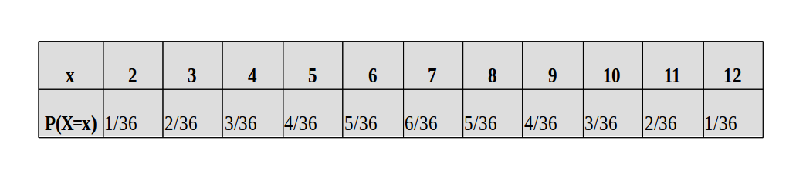

Una variable aleatoria es una función de los resultados de un procedimiento de recopilación de datos (Espacio muestral). Convierte los resultados del espacio muestral en un número. Si este número es representativo de la cuenta de algo, entonces es una variable aleatoria discreta. Si este número es representativo de la medida de algo (por ejemplo, la duración, el peso, la velocidad, etc.), entonces es una variable aleatoria continua. En estadística, las variables aleatorias son ligeramente diferentes a las variables utilizadas en álgebra. Dado que las variables aleatorias son una función del espacio muestral \(S\), que tiene resultados aleatorios, las variables aleatorias también implican incertidumbre, y por lo tanto debemos caracterizar esta incertidumbre. La nomenclatura utilizada normalmente (pueden ser más) para una variable aleatoria es \(X\), \(Y\) o \(Z\) (en mayúscula), mientras que los valores específicos de la variable aleatoria se muestran en minúscula \(x\), \(y\) o \(z\) . La incertidumbre en el valor de una variable aleatoria se cuantifica a través de la probabilidad. En este capítulo, lo que haremos es trabajar con variables aleatorias discretas como una forma de encontrar en general las propiedades de un procedimiento de recopilación de datos como: probabilidades, valor esperado y varianza.
Como dijimos anteriormente, una variable aleatoria es una función que tomas los valores del espacio muestral y los transforma en números reales. La variable aleatoria es discreta si esta toma un número finito o un número contable de valores.
Ejemplos
Ejemplo 1: Suponga el lanzamiento de tres monedas, sea la variable aleatoria \(X\) :=“número de caras”. En este caso, el espacio muestral esta definido por \(S = \{CCC, CC+, C++, C+C, +C+, ++C, +CC, +++\}\). Por ejemplo, cuando evaluamos a \(X\) en \(S\) para el elemento \(\{CCC\}\) encontramos que \(X({CCC}) = 3\), donde \(3\) es un número real. Vemos que la variable aleatoria \(X\) puede tomar los siguientes valores \(\{0, 1, 2, 3\}\). Estos valores corresponden al dominio de la variable aleatoria.
Ejemplo 2: Considere el experimento de lanzar dos dados, y sea la variable aleatoria \(Y:=\) ”la suma de los resultados”, entonces encontramos que los valores que podria tomar la variable aleatoria \(Y\) son: \(\{2,3,4,5,6,7,8,9,10,11,12\}\).
Suponga un espacio muestral \(S = \{s1, . . . , sn\}\), con una función de probabilidad P y un dominio \(\{x_1, . . . , x_m\}\). Entonces \(P(X = x_i)\) se conoce como la función de probabilidad inducida sobre el dominio de la variable aleatoria.
Ejemplo 3: Retomemos el ejemplo del lanzamiento de tres monedas donde \(S =\{CCC, CC+, C + +, C + C, +C+, + + C, +CC, + + +\}\) y \(\{0, 1, 2, 3\}\) el dominio. Tenemos que, por ejemplo, si queremos saber cuál es la probabilidad de obtener dos caras, \(P(X = 2)\), es decir,
\[P(X = 2) = P(\{CC+, C + C, +CC\}) = \dfrac{3}{8}\].
Entonces podemos definir la función de probabilidad sobre el dominio de \(X\):
\[\begin{equation} P(X=x) = \left\lbrace \begin{array}{ll} \dfrac{1}{8} \quad si \quad x = 0\\ \dfrac{3}{8} \quad si \quad x = 1\\ \dfrac{3}{8} \quad si \quad x = 2\\ \dfrac{1}{8} \quad si \quad x = 3 \end{array} \right. \end{equation}\]Ejemplo 4: Hallemos la función de probabilidad de la variable aleatoria \(X :=\) “número de caras pares al arrojar dos veces un dado equilibrado”. Notamos que el dominio de la variable aleatoria \(X\) es {0,1,2}.
\(P(X=0)=\dfrac{9}{36}\), es decir la probabilidad de obtener ninguna cara par.
\(P(X=1)=\dfrac{18}{36}\), es decir la probabilidad de obtener una cara par.
\(P(X=2)=\dfrac{9}{36}\), es decir la probabilidad de obtener las dos caras pares.
Finalmente la función de probabilidad esta dada por:
\[\begin{equation} P(X=x) = \left\lbrace \begin{array}{ll} \dfrac{9}{36} \quad si \quad x = 0\\ \dfrac{18}{36} \quad si \quad x = 1\\ \dfrac{9}{36} \quad si \quad x = 2 \end{array} \right. \end{equation}\]La función de probabilidad tiene dos propiedades importantes,
\(P(X=x_i) \geq 0\)
\(\sum_{x}P(X=x)=1\)
A cada variable aleatoria se le asocia una función llamada función de distribución acumulada de \(X\).
La función de distribución acumulada (en inglés cdf) de una variable aleatoria \(X\), denotada por \(F(x)\), se define como:
\[F(x) = P(X \leq x), \quad para \quad todo \quad x.\]
Ejemplo 5: Retomemos la variable aleatoria del ejemplo uno \(X:=\) “Número de caras en el lanzamiento de tres monedas”. En este ejemplo \(F(x)\) es una función definida a trozos (escalonada) con los saltos iguales a \(P(X = x_i)\). La función está definida en todos los números reales.
\[\begin{equation} P(X \leq x) = \left\lbrace \begin{array}{ll} 0 \quad si \quad -\infty < x < 0\\ \dfrac{1}{8} \quad si \quad 0 \leq x < 1 \\ \dfrac{4}{8} \quad si \quad 1 \leq x < 2 \\ \dfrac{7}{8} \quad si \quad 2 \leq x < 3 \\ 1 \quad si \quad 3 \leq x < \infty \\ \end{array} \right. \end{equation}\]Por ejemplo,
\[F(2.5) = P(X ≤ 2.5) = P(X = 0) + P(X = 1) + P(X = 2) =\dfrac{7}{8}\]
De otro lado,
\[F(−1) = P(X ≤ −1) = 0\]
\[F(4) = P(X ≤ 4) = 1\]
Cuando la variable aleatoria es discreta, el valor esperado es igual a la suma de la probabilidad de cada suceso aleatorio multiplicado por cada valor que toma la variable. Por lo tanto, el valor esperado representa la cantidad media o valor medio que se “esperaría” como resultado de un experimento aleatorio cuando la probabilidad de cada suceso se mantiene constante y el experimento se repite un número elevado de veces. Representamos el valor esperado de una variable aleatoria \(X\) como \(E(X)\). Entonces,
\[E(X)=\sum_{i=1}^{n}x_iP(X=x_i)\]
Ejemplo: Consideremos el experimento de lanzar un par de dados y anotar el valor de la suma en los resultados. Para este experimento la función de probabilidad \(P(X=x_i)\) esta dada por:
 Si repetimos este experimento muchas veces, ¿cuál sera el valor de la suma que esperamos encontrar?, esta pregunta la podemos resolver usando la definición de valor esperado, es decir calcular E(X).
\(E(X)=\sum_{i=1}^{n}x_iP(X=x_i)\)\
\(E(X)=2*(1/36)+3*(2/36)+4*(3/36)+5*(4/36)+6*(5/36)+7*(6/36)+8*(5/36)+9*(4/36)+10*(3/36)+11*(2/36)+12*(3/36)\)
\(E(X)=7\)
Por tanto, encontramos que el valor esperado E(X) es igual a 7.
La Varianza, \(Var(X)\), indica la dispersión de la variable aleatoria, o que tan dispersos estan los valores que toma la variable aleatoria alrededor del valor esperado. Una forma de definir la varianza de una variable aleatoria es:
\[Var(X)=E(X^2)-[E(X)]^2\] ¿A qué es igual la varianza del ejemplo anterior?. Para responder esta pregunta necesitamos saber el valor de \(E(X^2)\) dado que se encuentra en la formula de la varianza.
\(E(X^2)=2^2*(1/36)+3^2*(2/36)+4^2*(3/36)+5^2*(4/36)+6^2*(5/36)+7^2*(6/36)+8^2*(5/36)+9^2*(4/36)+10^2*(3/36)+11^2*(2/36)+12^2*(3/36)\)
\(E(X^2)=54.83\)
Entonces, por definición de varianza tenemos:
\(Var(X)=E(X^2)-[E(X)]^2\)
\(Var(X)=54.83 - 7^2\)
\(Var(X)=5.83\)
La desviación estandar se define como la raiz cuadrada de la varianza
\[SD=\sqrt{Var(X)}=\sqrt{5.83}=2.41\]